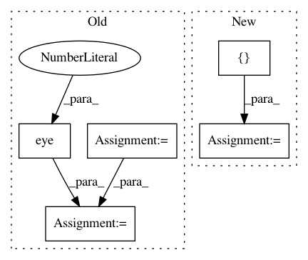

7fee1dae63fabcfa6c90cc1deecdd337083c7692,Orange/classification/softmax_regression.py,,,#,81
Before Change
// gradient check
m = SoftmaxRegressionLearner(lambda_=1.0)
m.num_classes = 3
Theta = np.random.randn(3 * 4)
Y = np.eye(3)[d.Y.ravel().astype(int)]
ga = m.cost_grad(Theta, d.X, Y)[1]
gn = numerical_grad(lambda t: m.cost_grad(t, d.X, Y)[0], Theta)
print(ga)
print(gn)
After Change
from Orange.classification import Fitter, Model
__all__ = ["SoftmaxRegressionLearner", "SoftmaxRegressionClassifier"]
class SoftmaxRegressionLearner(Fitter):
def __init__(self, lambda_=1.0, normalize=True, preprocessors=None,
In pattern: SUPERPATTERN
Frequency: 3
Non-data size: 5
Instances
Project Name: biolab/orange3
Commit Name: 7fee1dae63fabcfa6c90cc1deecdd337083c7692
Time: 2015-01-30
Author: anze.staric@gmail.com
File Name: Orange/classification/softmax_regression.py
Class Name:
Method Name:
Project Name: bashtage/linearmodels
Commit Name: 3b7c9ec865c02888620cdf215e61c616e1dcc7a2
Time: 2021-01-06
Author: kevin.k.sheppard@gmail.com
File Name: linearmodels/tests/iv/test_model.py
Class Name:
Method Name: data
Project Name: nipy/dipy
Commit Name: 39ddc5f5d2cb75be64204438d60dd3a45d4c300f
Time: 2013-12-21
Author: garyfallidis@gmail.com
File Name: dipy/sims/voxel.py
Class Name:
Method Name: multi_tensor_pdf